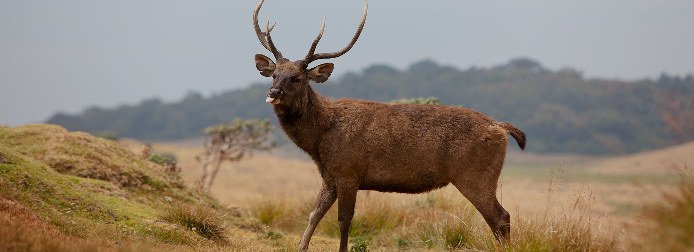
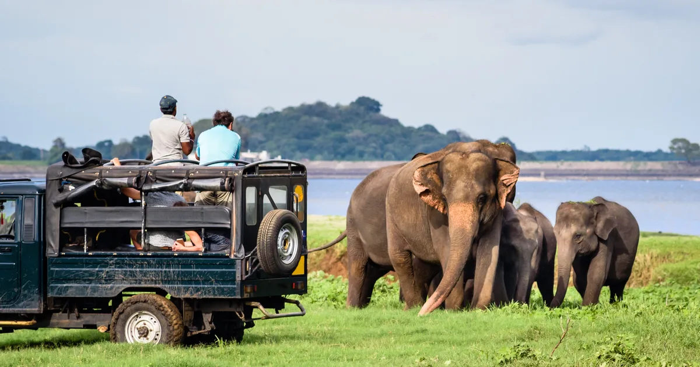

Different Wildlife Locations In Sri Lanka
These locations showcase the incredible diversity of wildlife in Sri Lanka and offer unique opportunities for nature enthusiasts and wildlife photographers. Each region has its own distinct ecosystem, contributing to the overall richness of Sri Lanka's natural heritage. -
1. Horton Plains National Park
Situated in the central highlands of Sri Lanka, in the Nuwara Eliya District. This stunning park offers a dramatic change from the dry lowlands. Lush montane forests, rolling grasslands, and breathtaking waterfalls characterize the landscape. Home to endemic birds like the Sri Lankan thrush and purple-faced langur, Horton Plains is a paradise for nature lovers and hikers.
2. Bundala National Park
Located in the south of Sri Lanka, near the town of Hambantota. It's known for its lagoons, marshes, and sand dunes, and is a great place to see migratory birds like flamingos, pelicans, and shorebirds. You can also spot elephants, crocodiles, and even the occasional leopard.

3. Minneriya National Park
Located in the north-central part of Sri Lanka, in the Anuradhapura District. It's famous for its large gatherings of elephants, especially during the dry season (May-October). The "Gathering" can see over 200 elephants congregating around the Minneriya reservoir. Minneriya also boasts leopards, sloth bears, and a variety of birds.
4. Kaudulla National Park
Nestled in the heart of the Cultural Triangle, in the Polonnaruwa District. Kaudulla is known for its large elephant population and lush grasslands. The park also offers sightings of leopards, deer, and monkeys